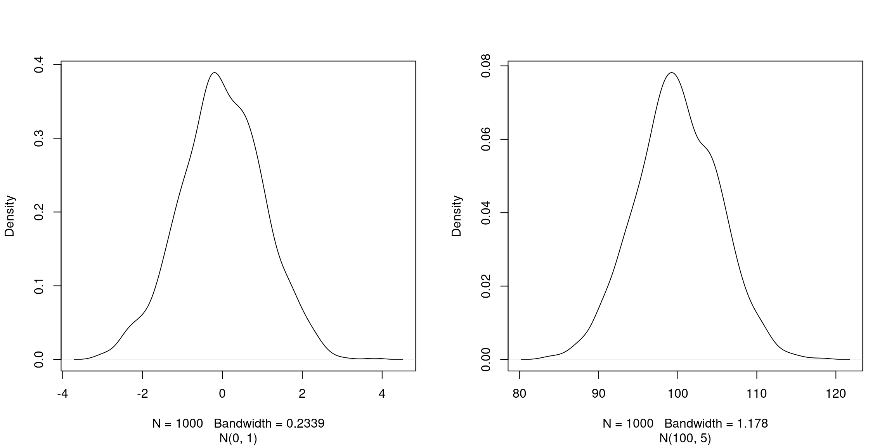

Chapter 2 Starting with R
Learning Objectives
Describe the purpose of the RStudio Script, Console, Environment, and Plots panes.
Organize files and directories for a set of analyses as an R project, and understand the purpose of the working directory.
Use the built-in RStudio help interface to search for more information on R functions.
Demonstrate how to provide sufficient information for troubleshooting with the R user community.
2.1 What is R? What is RStudio?
The term R is used to refer to both the programming language, the environment for statistical computing and the software that interprets the scripts written using it.
RStudio is currently a very popular way to not only write your R scripts but also to interact with the R software5 As opposed to using R directly from the command line console. There exist other software that interface and integrate with R, but RStudio is particularly well suited for beginners and while providing numerous very advanced features.. To function correctly, RStudio needs R and therefore both need to be installed on your computer.
The RStudio IDE Cheat Sheet provides much more information that will be covered here, but can be useful to learn keyboard shortcuts and discover new features.
2.2 Why learn R?
R does not involve lots of pointing and clicking, and that’s a good thing
The learning curve might be steeper than with other software, but with R, the results of your analysis do not rely on remembering a succession of pointing and clicking, but instead on a series of written commands, and that’s a good thing! So, if you want to redo your analysis because you collected more data, you don’t have to remember which button you clicked in which order to obtain your results; you just have to run your script again.
Working with scripts makes the steps you used in your analysis clear, and the code you write can be inspected by someone else who can give you feedback and spot mistakes.
Working with scripts forces you to have a deeper understanding of what you are doing, and facilitates your learning and comprehension of the methods you use.
R code is great for reproducibility
Reproducibility is when someone else (including your future self) can obtain the same results from the same dataset when using the same analysis.
R integrates with other tools to generate manuscripts from your code. If you collect more data, or fix a mistake in your dataset, the figures and the statistical tests in your manuscript are updated automatically.
An increasing number of journals and funding agencies expect analyses to be reproducible, so knowing R will give you an edge with these requirements.
We will learn more about reproducibility and reproducible research in chapter 7.
R is interdisciplinary and extensible
With 10000+ packages6 i.e. add-ons that confer R with new functionality, such as bioinformatics data analysis - see chapter 8 that can be installed to extend its capabilities, R provides a framework that allows you to combine statistical approaches from many scientific disciplines to best suit the analytical framework you need to analyze your data. For instance, R has packages for image analysis, GIS, time series, population genetics, and a lot more.
Figure 2.1: Exponential increase of the number of packages available on CRAN, the Comprehensive R Archive Network. From the R Journal, Volume 10/2, December 2018.
, the Comprehensive R Archive Network. From the R Journal, Volume 10/2, December 2018.](figs/cran.png)
R works on data of all shapes and sizes
The skills you learn with R scale easily with the size of your dataset. Whether your dataset has hundreds or millions of lines, it won’t make much difference to you.
R is designed for data analysis. It comes with special data structures and data types that make handling of missing data and statistical factors convenient.
R can connect to spreadsheets, databases, and many other data formats, on your computer or on the web.
R produces high-quality graphics
The plotting functionalities in R are endless, and allow you to adjust any aspect of your graph to convey most effectively the message from your data.
R has a large and welcoming community
Thousands of people use R daily. Many of them are willing to help you through mailing lists and websites such as Stack Overflow, or on the RStudio community. These broad user community extends to specialised areas such as bioinformatics.
Not only is R free, but it is also open-source and cross-platform
Anyone can inspect the source code to see how R works. Because of this transparency, there is less chance for mistakes, and if you (or someone else) find some, you can report and fix bugs.
2.3 Knowing your way around RStudio
Let’s start by learning about RStudio, which is an Integrated Development Environment (IDE) for working with R.
The RStudio IDE open-source product is free under the Affero General Public License (AGPL) v3. The RStudio IDE is also available with a commercial license and priority email support from RStudio, Inc.
We will use RStudio IDE to write code, navigate the files on our computer, inspect the variables we are going to create, and visualize the plots we will generate. RStudio can also be used for other things (e.g., version control, developing packages, writing Shiny apps) that we will not cover during the workshop.
Figure 2.2: RStudio interface screenshot. Clockwise from top left: Source, Environment/History, Files/Plots/Packages/Help/Viewer, Console.

RStudio is divided into 4 “Panes”:
- the Source for your scripts and documents (top-left, in the default layout)
- your Environment/History (top-right),
- your Files/Plots/Packages/Help/Viewer (bottom-right), and
- the R Console (bottom-left).
The placement of these panes and their content can be customized (see menu, Tools -> Global Options -> Pane Layout).
One of the advantages of using RStudio is that all the information you need to write code is available in a single window. Additionally, with many shortcuts, autocompletion, and highlighting for the major file types you use while developing in R, RStudio will make typing easier and less error-prone.
2.4 Getting set up
It is good practice to keep a set of related data, analyses, and text self-contained in a single folder, called the working directory. All of the scripts within this folder can then use relative paths to files that indicate where inside the project a file is located (as opposed to absolute paths, which point to where a file is on a specific computer). Working this way makes it a lot easier to move your project around on your computer and share it with others without worrying about whether or not the underlying scripts will still work.
RStudio provides a helpful set of tools to do this through its “Projects” interface, which not only creates a working directory for you, but also remembers its location (allowing you to quickly navigate to it) and optionally preserves custom settings and open files to make it easier to resume work after a break. Go through the steps for creating an “R Project” for this tutorial below.
- Start RStudio.
- Under the
Filemenu, click onNew project. ChooseNew directory, thenNew project. - Enter a name for this new folder (or “directory”), and choose a convenient location for it. This will be your working directory for this session (or whole course) (e.g.,
wsbim1207). - Click on
Create project. - (Optional) Set Preferences to ‘Never’ save workspace in RStudio.
RStudio’s default preferences generally work well, but saving a workspace to .RData can be cumbersome, especially if you are working with larger datasets. To turn that off, go to Tools –> ‘Global Options’ and select the ‘Never’ option for ‘Save workspace to .RData’ on exit.’
Figure 2.3: Set ‘Save workspace to .RData on exit’ to ‘Never’

2.4.1 Organizing your working directory
Using a consistent folder structure across your projects will help keep things organized, and will also make it easy to find/file things in the future. This can be especially helpful when you have multiple projects. In general, you may create directories (folders) for scripts, data, and documents.
data/Use this folder to store your raw data and intermediate datasets you may create for the need of a particular analysis. For the sake of transparency and provenance, you should always keep a copy of your raw data accessible and do as much of your data cleanup and preprocessing programmatically (i.e., with scripts, rather than manually) as possible. Separating raw data from processed data is also a good idea. For example, you could have filesdata/raw/tree_survey.plot1.txtand...plot2.txtkept separate from adata/processed/tree.survey.csvfile generated by thescripts/01.preprocess.tree_survey.Rscript.documents/This would be a place to keep outlines, drafts, and other text.scripts/(orsrc) This would be the location to keep your R scripts for different analyses or plotting, and potentially a separate folder for your functions (more on that later).
You may want additional directories or subdirectories depending on your project needs, but these should form the backbone of your working directory.
Figure 2.4: Example of a working directory structure.

For this course, we will need a data/ folder to store our raw data, and we will use data_output/ for when we learn how to export data as CSV files, and fig_output/ folder for the figures that we will save.
► Question
Under the Files tab on the right of the screen, click on New Folder and create a folder named data within your newly created working directory (e.g., ~/wsbim1207/data). (Alternatively, type dir.create("data") at your R console.) Repeat these operations to create a data_output/ and a fig_output folders.
We are going to keep the script in the root of our working directory because we are only going to use one file and it will make things easier.
Your working directory should now look like this:
Figure 2.5: How it should look like at the beginning of this lesson

2.4.2 The working directory
The working directory is an important concept to understand. It is the place from where R will be looking for and saving the files. When you write code for your project, it should refer to files in relation to the root of your working directory and only need files within this structure.
Using RStudio projects makes this easy and ensures that your working directory is set properly. If you need to check it, you can use getwd(). If for some reason your working directory is not what it should be, you can change it in the RStudio interface by navigating in the file browser where your working directory should be, and clicking on the blue gear icon More, and select Set As Working Directory. Alternatively you can use setwd("/path/to/working/directory") to reset your working directory. However, your scripts should not include this line because it will fail on someone else’s computer.
Example
The shema below represents the working directory wsbim1207 with the data and fig_output sub-directories, and 2 files in the latter:
wsbim1207/data/
/fig_output/fig1.pdf
/fig_output/fig2.pngIf we were in the working directory, we could refer to the fig1.pdf file using the relative path wsbim1207/fig_output/fig1.pdf or the absolute path /home/user/wsbim1207/fig_output/fig1.pdf.
If we were in the data directory, we would use the relative path ../fig_output/fig1.pdf or the same absolute path /home/user/wsbim1207/fig_output/fig1.pdf.
2.5 Interacting with R
The basis of programming is that we write down instructions for the computer to follow, and then we tell the computer to follow those instructions. We write, or code, instructions in R because it is a common language that both the computer and we can understand. We call the instructions commands and we tell the computer to follow the instructions by executing (also called running) those commands.
There are two main ways of interacting with R: by using the console or by using scripts (plain text files that contain your code). The console pane (in RStudio, the bottom left panel) is the place where commands written in the R language can be typed and executed immediately by the computer. It is also where the results will be shown for commands that have been executed. You can type commands directly into the console and press Enter to execute those commands, but they will be forgotten when you close the session.
Because we want our code and workflow to be reproducible, it is better to type the commands we want in the script editor, and save the script. This way, there is a complete record of what we did, and anyone (including our future selves!) can easily replicate the results on their computer.
RStudio allows you to execute commands directly from the script editor by using the Ctrl + Enter shortcut (on Macs, Cmd + Return will work, too). The command on the current line in the script (indicated by the cursor) or all of the commands in the currently selected text will be sent to the console and executed when you press Ctrl + Enter. You can find other keyboard shortcuts in this RStudio cheatsheet about the RStudio IDE.
At some point in your analysis you may want to check the content of a variable or the structure of an object, without necessarily keeping a record of it in your script. You can type these commands and execute them directly in the console. RStudio provides the Ctrl + 1 and Ctrl + 2 shortcuts allow you to jump between the script and the console panes.
If R is ready to accept commands, the R console shows a > prompt. If it receives a command (by typing, copy-pasting or sent from the script editor using Ctrl + Enter), R will try to execute it, and when ready, will show the results and come back with a new > prompt to wait for new commands.
If R is still waiting for you to enter more data because it isn’t complete yet, the console will show a + prompt. It means that you haven’t finished entering a complete command. This is because you have not ‘closed’ a parenthesis or quotation, i.e. you don’t have the same number of left-parentheses as right-parentheses, or the same number of opening and closing quotation marks. When this happens, and you thought you finished typing your command, click inside the console window and press Esc; this will cancel the incomplete command and return you to the > prompt.
2.6 How to learn more during and after the course?
The material we cover during this course will give you an initial taste of how you can use R to analyse data for your own research. However, you will need to learn more to do advanced operations such as cleaning your dataset, using statistical methods, or creating beautiful graphics7 We will introduce most of these (except statistics) here, but will only manage to scratch the surface of the wealth of what is possible to do with R.. The best way to become proficient and efficient at R, as with any other tool, is to use it to address your actual research questions. As a beginner, it can feel daunting to have to write a script from scratch, and given that many people make their code available online, modifying existing code to suit your purpose might make it easier for you to get started.

2.7 Seeking help
Use the built-in RStudio help interface to search for more information on R functions
Figure 2.6: RStudio help interface.

One of the fastest ways to get help, is to use the RStudio help interface. This panel by default can be found at the lower right hand panel of RStudio. As seen in the screenshot, by typing the word “Mean”, RStudio tries to also give a number of suggestions that you might be interested in. The description is then shown in the display window.
I know the name of the function I want to use, but I’m not sure how to use it
If you need help with a specific function, let’s say barplot(), you can type:
?barplotIf you just need to remind yourself of the names of the arguments, you can use:
args(lm)I want to use a function that does X, there must be a function for it but I don’t know which one…
If you are looking for a function to do a particular task, you can use the help.search() function, which is called by the double question mark ??. However, this only looks through the installed packages for help pages with a match to your search request
??kruskalIf you can’t find what you are looking for, you can use the rdocumentation.org website that searches through the help files across all packages available.
Finally, a generic Google or internet search “R <task>” will often either send you to the appropriate package documentation or a helpful forum where someone else has already asked your question.
I am stuck… I get an error message that I don’t understand
Start by googling the error message. However, this doesn’t always work very well because often, package developers rely on the error catching provided by R. You end up with general error messages that might not be very helpful to diagnose a problem (e.g. “subscript out of bounds”). If the message is very generic, you might also include the name of the function or package you’re using in your query.
However, you should check Stack Overflow. Search using the [r] tag. Most questions have already been answered, but the challenge is to use the right words in the search to find the answers:
http://stackoverflow.com/questions/tagged/r
The Introduction to R can also be dense for people with little programming experience but it is a good place to understand the underpinnings of the R language.
The R FAQ is dense and technical but it is full of useful information.
Asking for help
The key to receiving help from someone is for them to rapidly grasp your problem. You should make it as easy as possible to pinpoint where the issue might be.
Try to use the correct words to describe your problem. For instance, a package is not the same thing as a library. Most people will understand what you meant, but others have really strong feelings about the difference in meaning. The key point is that it can make things confusing for people trying to help you. Be as precise as possible when describing your problem.
If possible, try to reduce what doesn’t work to a simple reproducible example. If you can reproduce the problem using a very small data frame instead of your 50000 rows and 10000 columns one, provide the small one with the description of your problem. When appropriate, try to generalize what you are doing so even people who are not in your field can understand the question. For instance instead of using a subset of your real dataset, create a small (3 columns, 5 rows) generic one. For more information on how to write a reproducible example see this article by Hadley Wickham.
To share an object with someone else, if it’s relatively small, you can use the function dput(). It will output R code that can be used to recreate the exact same object as the one in memory:
## iris is an example data frame that comes with R and head() is a
## function that returns the first part of the data frame
dput(head(iris))## structure(list(Sepal.Length = c(5.1, 4.9, 4.7, 4.6, 5, 5.4),
## Sepal.Width = c(3.5, 3, 3.2, 3.1, 3.6, 3.9), Petal.Length = c(1.4,
## 1.4, 1.3, 1.5, 1.4, 1.7), Petal.Width = c(0.2, 0.2, 0.2,
## 0.2, 0.2, 0.4), Species = structure(c(1L, 1L, 1L, 1L, 1L,
## 1L), .Label = c("setosa", "versicolor", "virginica"), class = "factor")), row.names = c(NA,
## 6L), class = "data.frame")If the object is larger, provide either the raw file (i.e., your CSV file) with your script up to the point of the error (and after removing everything that is not relevant to your issue). Alternatively, in particular if your question is not related to a data frame, you can save any R object to a file8 See section 3.10 for a better introduction about exporting and saving data.:
saveRDS(iris, file="/tmp/iris.rds")The content of this file is however not human readable and cannot be posted directly on Stack Overflow. Instead, it can be sent to someone by email who can read it with the readRDS() command (here it is assumed that the downloaded file is in a Downloads folder in the user’s home directory):
some_data <- readRDS(file="~/Downloads/iris.rds")Last, but certainly not least, always include the output of sessionInfo() as it provides critical information about your platform, the versions of R and the packages that you are using, and other information that can be very helpful to understand your problem.
sessionInfo()## R version 3.5.3 Patched (2019-03-11 r76221)
## Platform: x86_64-pc-linux-gnu (64-bit)
## Running under: Ubuntu 18.04.2 LTS
##
## Matrix products: default
## BLAS: /usr/lib/x86_64-linux-gnu/libf77blas.so.3.10.3
## LAPACK: /usr/lib/x86_64-linux-gnu/atlas/liblapack.so.3.10.3
##
## locale:
## [1] LC_CTYPE=en_US.UTF-8 LC_NUMERIC=C
## [3] LC_TIME=fr_FR.UTF-8 LC_COLLATE=en_US.UTF-8
## [5] LC_MONETARY=fr_FR.UTF-8 LC_MESSAGES=en_US.UTF-8
## [7] LC_PAPER=fr_FR.UTF-8 LC_NAME=C
## [9] LC_ADDRESS=C LC_TELEPHONE=C
## [11] LC_MEASUREMENT=fr_FR.UTF-8 LC_IDENTIFICATION=C
##
## attached base packages:
## [1] stats graphics grDevices utils datasets methods base
##
## loaded via a namespace (and not attached):
## [1] Rcpp_1.0.0 bookdown_0.9 msmbstyle_0.0.4 digest_0.6.18
## [5] magrittr_1.5 evaluate_0.13 highr_0.7 stringi_1.3.1
## [9] rstudioapi_0.9.0 xml2_1.2.0 rmarkdown_1.11 tools_3.5.3
## [13] stringr_1.4.0 xfun_0.5 yaml_2.2.0 compiler_3.5.3
## [17] htmltools_0.3.6 knitr_1.21Where to ask for help?
- The person sitting next to you during the course. Don’t hesitate to talk to your neighbour during the workshop, compare your answers, and ask for help.
- Your friendly colleagues: if you know someone with more experience than you, they might be able and willing to help you.
- Stack Overflow: if your question hasn’t been answered before and is well crafted, chances are you will get an answer in less than 5 min. Remember to follow their guidelines on how to ask a good question.
- The R-help mailing list: it is read by a lot of people (including most of the R core team), a lot of people post to it, but the tone can be pretty dry, and it is not always very welcoming to new users. If your question is valid, you are likely to get an answer very fast but don’t expect that it will come with smiley faces. Also, here more than anywhere else, be sure to use correct vocabulary (otherwise you might get an answer pointing to the misuse of your words rather than answering your question). You will also have more success if your question is about a base function rather than a specific package.
- If your question is about a specific package, see if there is a mailing list for it. Usually it’s included in the DESCRIPTION file of the package that can be accessed using
packageDescription("name-of-package"). You may also want to try to email the author of the package directly, or open an issue on the code repository (e.g., GitHub). - There are also some topic-specific mailing lists (GIS, phylogenetics, etc…), the complete list is here.
More resources
The Posting Guide for the R mailing lists.
How to ask for R help useful guidelines
This blog post by Jon Skeet has quite comprehensive advice on how to ask programming questions.
The reprex package is very helpful to create reproducible examples when asking for help. The rOpenSci community call “How to ask questions so they get answered” (Github link and video recording) includes a presentation of the reprex package and of its philosophy.
2.8 R packages
2.8.1 Loading packages
As we have seen above, R packages play a fundamental role in R. The make use of a package’s functionality, assuming it is installed, we first need to load it to be able to use it. This is done with the library() function. Below, we load ggplot2.
library("ggplot2")2.8.2 Installing packages
The default package repository is The Comprehensive R Archive Network (CRAN), and any package that is available on CRAN can be installed with the install.packages() function. Below, for example, we install the dplyr package that we will learn about late.
install.packages("dplyr")This command will install the dplyr package as well as all its dependencies, i.e. all the packages that it relies on to function.
Github is a general-pupose online software project repository and is well suited for R package development. To install a package from Gtihub, one can use the install_github() function from the devtools package. Below we first install the latter from CRAN (as show above), then we install rWSBIM1207 directly from the user UCLouvain-CBIO github repository.
install.packages("devtools")
library("devtools")
install_github("UCLouvain-CBIO/rWSBIM1207")In section 8.3, we will see how to install Bioconductor, a project dedicated to bioinformatics and omics packages.
2.9 Introduction to R
Learning Objectives
- Define the following terms as they relate to R: object, assign, call, function, arguments, options.
- Assign values to objects in R.
- Learn how to name objects
- Use comments to inform script.
- Solve simple arithmetic operations in R.
- Call functions and use arguments to change their default options.
- Inspect the content of vectors and manipulate their content.
- Subset and extract values from vectors.
- Analyze vectors with missing data.
2.9.1 Creating objects in R
You can get output from R simply by typing math in the console:
3 + 5## [1] 812 / 7## [1] 1.714286However, to do useful and interesting things, we need to assign values to objects. To create an object, we need to give it a name followed by the assignment operator <-, and the value we want to give it:
weight_kg <- 55<- is the assignment operator. It assigns values on the right to objects on the left. So, after executing x <- 3, the value of x is 3. The arrow can be read as 3 goes into x. For historical reasons, you can also use = for assignments, but not in every context. Because of the slight differences in syntax, it is good practice to always use <- for assignments.
In RStudio, typing Alt + - (push Alt at the same time as the - key) will write <- in a single keystroke in a PC, while typing Option + - (push Option at the same time as the - key) does the same in a Mac.
2.9.2 Naming variables
Objects can be given any name such as x, current_temperature, or subject_id. You want your object names to be explicit and not too long. They cannot start with a number (2x is not valid, but x2 is). R is case sensitive (e.g., weight_kg is different from Weight_kg). There are some names that cannot be used because they are the names of fundamental functions in R (e.g., if, else, for, see here for a complete list). In general, even if it’s allowed, it’s best to not use other function names (e.g., c, T, mean, data, df, weights). If in doubt, check the help to see if the name is already in use. It’s also best to avoid dots (.) within an object name as in my.dataset. There are many functions in R with dots in their names for historical reasons, but because dots have a special meaning in R (for methods) and other programming languages, it’s best to avoid them. It is also recommended to use nouns for object names, and verbs for function names. It’s important to be consistent in the styling of your code (where you put spaces, how you name objects, etc.). Using a consistent coding style makes your code clearer to read for your future self and your collaborators. In R, three popular style guides are Google’s, Jean Fan’s and the tidyverse’s. The tidyverse’s is very comprehensive and may seem overwhelming at first. You can install the lintr package to automatically check for issues in the styling of your code.
Objects vs. variables
What are known as
objectsinRare known asvariablesin many other programming languages. Depending on the context,objectandvariablecan have drastically different meanings. However, in this lesson, the two words are used synonymously. For more information see: https://cran.r-project.org/doc/manuals/r-release/R-lang.html#Objects
When assigning a value to an object, R does not print anything. You can force R to print the value by using parentheses or by typing the object name:
weight_kg <- 55 # doesn't print anything
(weight_kg <- 55) # but putting parenthesis around the call prints the value of `weight_kg`## [1] 55weight_kg # and so does typing the name of the object## [1] 55Now that R has weight_kg in memory, we can do arithmetic with it. For instance, we may want to convert this weight into pounds (weight in pounds is 2.2 times the weight in kg):
2.2 * weight_kg## [1] 121We can also change an object’s value by assigning it a new one:
weight_kg <- 57.5
2.2 * weight_kg## [1] 126.5This means that assigning a value to one object does not change the values of other objects For example, let’s store the animal’s weight in pounds in a new object, weight_lb:
weight_lb <- 2.2 * weight_kgand then change weight_kg to 100.
weight_kg <- 100► Question
What do you think is the current content of the object weight_lb? 126.5 or 220?
2.9.4 Functions and their arguments
Functions are “canned scripts” that automate more complicated sets of commands including operations assignments, etc. Many functions are predefined, or can be made available by importing R packages (more on that later). A function usually gets one or more inputs called arguments. Functions often (but not always) return a value. A typical example would be the function sqrt(). The input (the argument) must be a number, and the return value (in fact, the output) is the square root of that number. Executing a function (‘running it’) is called calling the function. An example of a function call is:
b <- sqrt(a)Here, the value of a is given to the sqrt() function, the sqrt() function calculates the square root, and returns the value which is then assigned to the object b. This function is very simple, because it takes just one argument.
The return ‘value’ of a function need not be numerical (like that of sqrt()), and it also does not need to be a single item: it can be a set of things, or even a dataset. We’ll see that when we read data files into R.
Arguments can be anything, not only numbers or filenames, but also other objects. Exactly what each argument means differs per function, and must be looked up in the documentation (see below). Some functions take arguments which may either be specified by the user, or, if left out, take on a default value: these are called options. Options are typically used to alter the way the function operates, such as whether it ignores ‘bad values’, or what symbol to use in a plot. However, if you want something specific, you can specify a value of your choice which will be used instead of the default.
Let’s try a function that can take multiple arguments: round().
round(3.14159)## [1] 3Here, we’ve called round() with just one argument, 3.14159, and it has returned the value 3. That’s because the default is to round to the nearest whole number. If we want more digits we can see how to do that by getting information about the round function. We can use args(round) or look at the help for this function using ?round.
args(round)## function (x, digits = 0)
## NULL?roundWe see that if we want a different number of digits, we can type digits=2 or however many we want.
round(3.14159, digits = 2)## [1] 3.14If you provide the arguments in the exact same order as they are defined you don’t have to name them:
round(3.14159, 2)## [1] 3.14And if you do name the arguments, you can switch their order:
round(digits = 2, x = 3.14159)## [1] 3.14It’s good practice to put the non-optional arguments (like the number you’re rounding) first in your function call, and to specify the names of all optional arguments. If you don’t, someone reading your code might have to look up the definition of a function with unfamiliar arguments to understand what you’re doing.
2.9.5 Vectors and data types
A vector is the most common and basic data type in R, and is pretty much the workhorse of R. A vector is composed by a series of values, which can be either numbers or characters. We can assign a series of values to a vector using the c() function. For example we can create a vector of animal weights and assign it to a new object weight_g:
weight_g <- c(50, 60, 65, 82)
weight_g## [1] 50 60 65 82A vector can also contain characters:
animals <- c("mouse", "rat", "dog")
animals## [1] "mouse" "rat" "dog"The quotes around “mouse”, “rat”, etc. are essential here. Without the quotes R will assume there are objects called mouse, rat and dog. As these objects don’t exist in R’s memory, there will be an error message.
There are many functions that allow you to inspect the content of a vector. length() tells you how many elements are in a particular vector:
length(weight_g)## [1] 4length(animals)## [1] 3An important feature of a vector, is that all of the elements are the same type of data. The function class() indicates the class (the type of element) of an object:
class(weight_g)## [1] "numeric"class(animals)## [1] "character"The function str() provides an overview of the structure of an object and its elements. It is a useful function when working with large and complex objects:
str(weight_g)## num [1:4] 50 60 65 82str(animals)## chr [1:3] "mouse" "rat" "dog"You can use the c() function to add other elements to your vector:
weight_g <- c(weight_g, 90) # add to the end of the vector
weight_g <- c(30, weight_g) # add to the beginning of the vector
weight_g## [1] 30 50 60 65 82 90In the first line, we take the original vector weight_g, add the value 90 to the end of it, and save the result back into weight_g. Then we add the value 30 to the beginning, again saving the result back into weight_g.
We can do this over and over again to grow a vector, or assemble a dataset. As we program, this may be useful to add results that we are collecting or calculating.
An atomic vector is the simplest R data type and is a linear vector of a single type. Above, we saw 2 of the 6 main atomic vector types that R uses: "character" and "numeric" (or "double"). These are the basic building blocks that all R objects are built from. The other 4 atomic vector types are:
"logical"forTRUEandFALSE(the boolean data type)"integer"for integer numbers (e.g.,2L, theLindicates to R that it’s an integer)"complex"to represent complex numbers with real and imaginary parts (e.g.,1 + 4i) and that’s all we’re going to say about them"raw"for bitstreams that we won’t discuss further
You can check the type of your vector using the typeof() function and inputting your vector as the argument.
Vectors are one of the many data structures that R uses. Other important ones are lists (list), matrices (matrix), data frames (data.frame), factors (factor) and arrays (array).
► Question
We’ve seen that atomic vectors can be of type character, numeric (or double), integer, and logical. But what happens if we try to mix these types in a single vector?
► Solution
► Question
What will happen in each of these examples? (hint: use class() to check the data type of your objects):
num_char <- c(1, 2, 3, "a")
num_logical <- c(1, 2, 3, TRUE)
char_logical <- c("a", "b", "c", TRUE)
tricky <- c(1, 2, 3, "4")
► Solution
► Question
Why do you think it happens?
► Solution
► Question
How many values in combined_logical are "TRUE" (as a character) in the following example:
num_logical <- c(1, 2, 3, TRUE)
char_logical <- c("a", "b", "c", TRUE)
combined_logical <- c(num_logical, char_logical)
► Solution
► Question
In R, we call converting objects from one class into another class coercion. These conversions happen according to a hierarchy, whereby some types get preferentially coerced into other types. Can you draw a diagram that represents the hierarchy of how these data types are coerced?
► Solution
2.9.6 Subsetting vectors
If we want to extract one or several values from a vector, we must provide one or several indices in square brackets. For instance:
animals <- c("mouse", "rat", "dog", "cat")
animals[2]## [1] "rat"animals[c(3, 2)]## [1] "dog" "rat"We can also repeat the indices to create an object with more elements than the original one:
more_animals <- animals[c(1, 2, 3, 2, 1, 4)]
more_animals## [1] "mouse" "rat" "dog" "rat" "mouse" "cat"R indices start at 1. Programming languages like Fortran, MATLAB, Julia, and R start counting at 1, because that’s what human beings typically do. Languages in the C family (including C++, Java, Perl, and Python) count from 0 because that’s simpler for computers to do.
Finally, it is also possible to get all the elements of a vector except some specified elements using negative indices:
animals ## all animals## [1] "mouse" "rat" "dog" "cat"animals[-1] ## all but the first one## [1] "rat" "dog" "cat"animals[-c(1, 3)] ## all but 1st/3rd ones## [1] "rat" "cat"animals[c(-1, -3)] ## all but 1st/3rd ones## [1] "rat" "cat"2.9.7 Conditional subsetting
Another common way of subsetting is by using a logical vector. TRUE will select the element with the same index, while FALSE will not:
weight_g <- c(21, 34, 39, 54, 55)
weight_g[c(TRUE, FALSE, TRUE, TRUE, FALSE)]## [1] 21 39 54Typically, these logical vectors are not typed by hand, but are the output of other functions or logical tests. For instance, if you wanted to select only the values above 50:
## will return logicals with TRUE for the indices that meet
## the condition
weight_g > 50## [1] FALSE FALSE FALSE TRUE TRUE## so we can use this to select only the values above 50
weight_g[weight_g > 50]## [1] 54 55You can combine multiple tests using & (both conditions are true, AND) or | (at least one of the conditions is true, OR):
weight_g[weight_g < 30 | weight_g > 50]## [1] 21 54 55weight_g[weight_g >= 30 & weight_g == 21]## numeric(0)Here, < stands for “less than”, > for “greater than”, >= for “greater than or equal to”, and == for “equal to”. The double equal sign == is a test for numerical equality between the left and right hand sides, and should not be confused with the single = sign, which performs variable assignment (similar to <-).
A common task is to search for certain strings in a vector. One could use the “or” operator | to test for equality to multiple values, but this can quickly become tedious. The function %in% allows you to test if any of the elements of a search vector are found:
animals <- c("mouse", "rat", "dog", "cat")
animals[animals == "cat" | animals == "rat"] # returns both rat and cat## [1] "rat" "cat"animals %in% c("rat", "cat", "dog", "duck", "goat")## [1] FALSE TRUE TRUE TRUEanimals[animals %in% c("rat", "cat", "dog", "duck", "goat")]## [1] "rat" "dog" "cat"► Question
Can you figure out why "four" > "five" returns TRUE?
► Solution
2.9.8 Names
It is possible to name each element of a vector. The code chunk below show a initial vector without any names, how names are set, and retrieved.
x <- c(1, 5, 3, 5, 10)
names(x) ## no names## NULLnames(x) <- c("A", "B", "C", "D", "E")
names(x) ## now we have names## [1] "A" "B" "C" "D" "E"When a vector has names, it is possible to access elements by their name, in addition to their index.
x[c(1, 3)]## A C
## 1 3x[c("A", "C")]## A C
## 1 32.9.9 Missing data
As R was designed to analyze datasets, it includes the concept of missing data (which is uncommon in other programming languages). Missing data are represented in vectors as NA.
When doing operations on numbers, most functions will return NA if the data you are working with include missing values. This feature makes it harder to overlook the cases where you are dealing with missing data. You can add the argument na.rm=TRUE to calculate the result while ignoring the missing values.
heights <- c(2, 4, 4, NA, 6)
mean(heights)## [1] NAmax(heights)## [1] NAmean(heights, na.rm = TRUE)## [1] 4max(heights, na.rm = TRUE)## [1] 6If your data include missing values, you may want to become familiar with the functions is.na(), na.omit(), and complete.cases(). See below for examples.
## Extract those elements which are not missing values.
heights[!is.na(heights)]## [1] 2 4 4 6## Returns the object with incomplete cases removed.
## The returned object is an atomic vector of type `"numeric"`
## (or `"double"`).
na.omit(heights)## [1] 2 4 4 6
## attr(,"na.action")
## [1] 4
## attr(,"class")
## [1] "omit"## Extract those elements which are complete cases.
## The returned object is an atomic vector of type `"numeric"`
## (or `"double"`).
heights[complete.cases(heights)]## [1] 2 4 4 6► Question
- Using this vector of heights in inches, create a new vector with the NAs removed.
heights <- c(63, 69, 60, 65, NA, 68, 61, 70, 61, 59, 64, 69, 63, 63, NA, 72, 65, 64, 70, 63, 65)- Use the function
median()to calculate the median of theheightsvector. - Use R to figure out how many people in the set are taller than 67 inches.
► Solution
2.10 Generating vectors
Constructors
There exists some functions to generate vectors of different type. To generate a vector of numerics, one can use the numerics() constructor, providing the length of the output vector as parameter. The values will be initialised with 0.
numeric(3)## [1] 0 0 0numeric(10)## [1] 0 0 0 0 0 0 0 0 0 0Note that if we ask for a vector of numerics of length 0, we obtain exactly that:
numeric(0)## numeric(0)There are similar constructors for characters and logicals, named character() and logical() respectively.
► Question
What are the defaults for character and logical vectors?
► Solution
Replicate elements
The rep function allow to repeat a value a certain number of times. If we want to initiate a vector of numerics of length 5 with the value -1, for example, we could do the following:
rep(-1, 5)## [1] -1 -1 -1 -1 -1Similarly, to generate a vector populated with missing values, which is often a good way to start, without setting assumptions on the data to be collected:
rep(NA, 5)## [1] NA NA NA NA NArep can take vectors of any length as input (above, we used vectors of length 1) and any type. For example, if we want to repeat the values 1, 2 and 3 five times, we would do the following:
rep(c(1, 2, 3), 5)## [1] 1 2 3 1 2 3 1 2 3 1 2 3 1 2 3► Question
What if we wanted to repeat the values 1, 2 and 3 five times, but obtain five 1s, five 2s and five 3s in that order? There are two possibilities - see ?rep or ?sort for help.
► Solution
Sequence generation
Another very useful function is seq, to generate a sequence of numbers. For example, to generate a sequence of integers from 1 to 20 by steps of 2, one would use:
seq(from = 1, to = 20, by = 2)## [1] 1 3 5 7 9 11 13 15 17 19The default value of by is 1 and, given that the generate of a sequence of one value to another with steps of 1 is frequently used, there’s a shortcut:
seq(1, 5, 1)## [1] 1 2 3 4 5seq(1, 5) ## default by## [1] 1 2 3 4 51:5## [1] 1 2 3 4 5To generate a sequence of numbers from 1 to 20 of final length of 3, one would use:
seq(from = 1, to = 20, length.out = 3)## [1] 1.0 10.5 20.0Random samples and permutations
A last group of useful functions are those that generate random data. The first one, sample, generates a random permutation of another vector. For example, to draw a random order to 10 students oral example, I first assign each student a number from 1 to then (for instance based on the alphabetic order of their name) and then:
sample(1:10)## [1] 3 4 5 7 2 8 9 6 10 1Without further arguments, sample will return a permutation of all elements of the vector. If I want a random sample of a certain size, I would set this value as second argument. Below, I sample 5 random letters from the alphabet contained in the pre-defined letters vector:
sample(letters, 5)## [1] "f" "e" "q" "i" "x"If I wanted an output larger than the input vector, or being able to draw some elements multiple times, I would need to set the replace argument to TRUE:
sample(1:5, 10, replace = TRUE)## [1] 3 4 5 2 4 5 2 4 1 2► Question
When trying the functions above out, you will have realised that the samples are indeed random and that one doesn’t get the same permutation twice. To be able to reproduce these random draws, one can set the random number generation seed manually with set.seed() before drawing the random sample.
Test this feature with your neighbour. First draw two random permutations of
1:10independently and observe that you get different results.Now set the seed with, for example,
set.seed(123)and repeat the random draw. Observe that you now get the same random draws.Repeat by setting a different seed.
► Solution
Drawing samples from a normal distribution
The last function we are going to see is rnorm, that draws a random sample from a normal distribution. Two normal distributions of means 0 and 100 and standard deviations 1 and 5, noted noted N(0, 1) and N(100, 5), are shown below
Figure 2.7: Two normal distributions: N(0, 1) on the left and N(100, 5) on the right.
The three arguments, n, mean and sd, define the size of the sample, and the parameters of the normal distribution, i.e the mean and its standard deviation. The defaults of the latter are 0 and 1.
rnorm(5)## [1] 0.69641761 0.05351568 -1.31028350 -2.12306606 -0.20807859rnorm(5, 2, 2)## [1] 1.3744268 -0.1164714 2.8344472 1.3690969 3.6510983rnorm(5, 100, 5)## [1] 106.45636 96.87448 95.62427 100.71678 107.12595Now that we have learned how to write scripts, and the basics of R’s data structures, we are ready to start working with larger data, and learn about data frames.
2.11 Additional exercises
► Question
- Create two vectors
xandycontaining the numbers 1 to 10 and 10 to 1 respectively. You can use theseqor:functions rather than constructing them by hand. - Check their type. Depending how they were created, they can be integers or doubles.
- Take the sum (see the
sum()function) of each vector and verify they are identical. - Sum vectors element-wise, and verify that all results are identical.
- Swap the value or
xandy.
► Question
Create a vector named x containing the numbers 20 to 2. Retrieve elements that are strictly larger than 5 and smaller or equal than 15.
Remove the first 8 elements from
xand store the result inx2.
► Question
You’re doing an colony counting experiment, counting every day, from Monday to Friday how many molds you see in your cell cultures.
Create a vector named
moldscontaining the results of your counts: 1, 2, 5, 8 and 10.Set the names of
moldsusing week days and extract the number of molds identified on Wednesday.
► Question
- Calculate the mean of a random distribution N(15, 1) of size 100 and store it in variable
m1. - Calculate the mean of a random distribution N(0, 1) of size 100 and store it in variable
m2. - Calculate the mean of another random distribution N(15, 1) of size 1000 and store it in variable
m3. - Can you guess with one of
m1andm2will be larger? Verify in R. - Can you guess with one of
m1andm3will be larger? Verify in R.
► Question
Using the
samplefunction, simulate a set of 100 students voting (randomly) for 1, 2 or 3 breaks during the WSBIM1207 course.Display the values as a table of votes.
Compute the number of students that wanted more that 1 break.
Bonus: as above, but setting the probability for votes to 1/5, 2/5 and 2/5 respectively. Read
?sampleto find out how to do that.
Page built: 2019-03-12
2.9.3 Comments
The comment character in R is
#, anything to the right of a#in a script will be ignored by R. It is useful to leave notes, and explanations in your scripts.RStudio makes it easy to comment or uncomment a paragraph: after selecting the lines you want to comment, press at the same time on your keyboard Ctrl + Shift + C. If you only want to comment out one line, you can put the cursor at any location of that line (i.e. no need to select the whole line), then press Ctrl + Shift + C.
► Question
What are the values after each statement in the following?